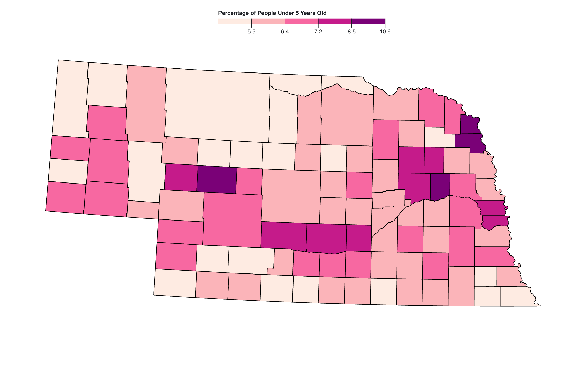
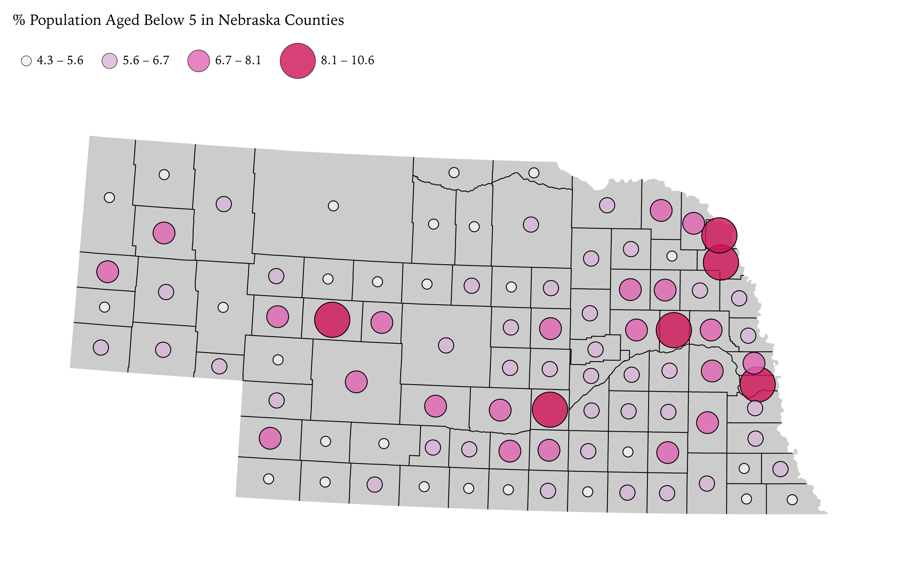
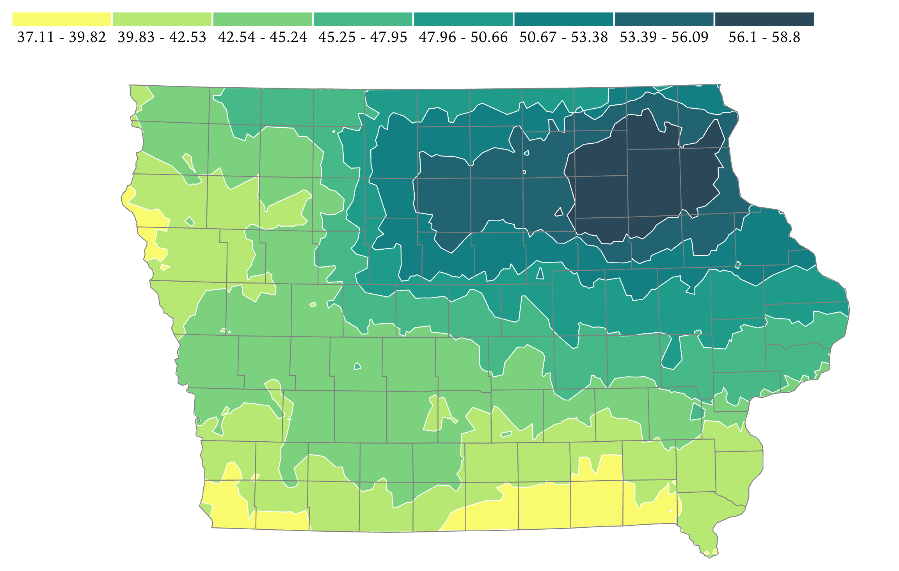
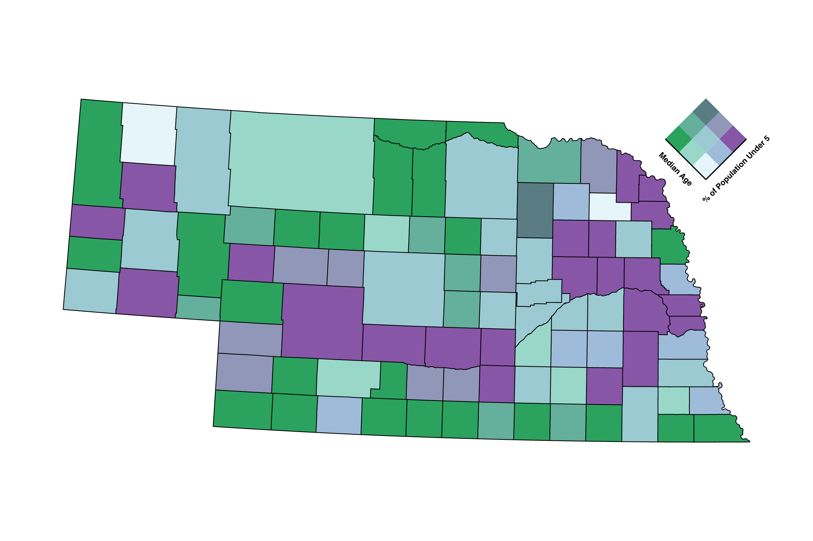
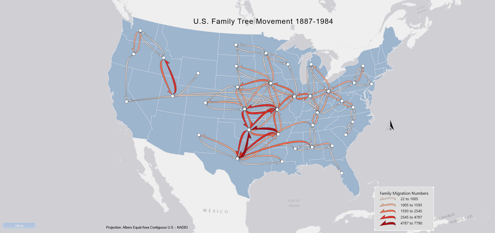

This choropleth map shows the distribution of each counties' percentage of their population under 5 years old. The map uses a natural breaks classification and the differences in percentage are shown with color changes.

This graduated symbol map shows the distribution of each counties' percentage of their population under 5 years old with different sized circles and colors. This map also uses a natrual breaks classification.

This isarithmic map is the yearly total precipitation in the state of Iowa. It clearly shows by the darkest color that Northeastern Iowa gets the most precipitation yearly and the southern and western most get the least.

This bivariate map compares the distribution of median age and percentage of the population under 5 in Nebraska counties. The dark purple shows high percentage under 5 and low median age. The dark green shows high median age and low percentage under 5.

This flow map shows the migration of families between capital cities of select states between 1887-1942. Changes in numbers is indicated by colors and arrow size.